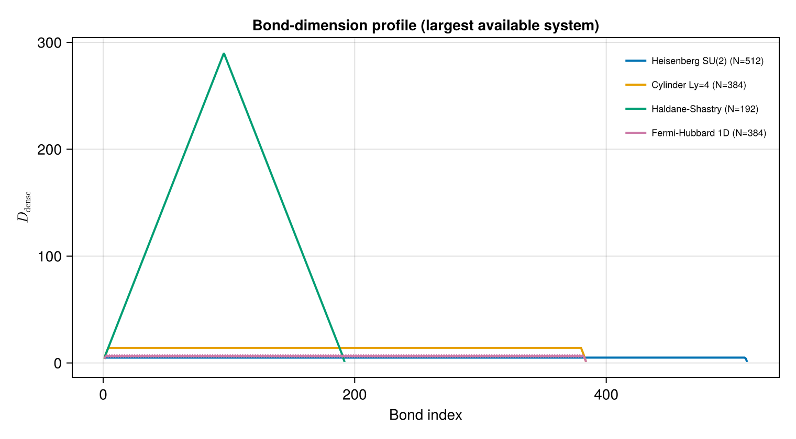

Long-range interactions
Every model on the previous pages had a bond dimension independent of system size, because only a bounded number of couplings could straddle any cut. Long-range models break that: when every pair of sites interacts, the number of open channels at a bond grows with the system.
This page builds the Haldane–Shastry chain and a general power law, and shows that the exact bond dimension grows linearly:
\[D_\mathrm{dense} = \tfrac{3}{2} N + 2 .\]
using OpSum: OpSum
include(joinpath(pkgdir(OpSum), "examples", "common.jl"))hermiticity_error (generic function with 1 method)Haldane–Shastry
\[H = J \frac{\pi^2}{N^2} \sum_{n < m} \frac{\vec{S}_n \cdot \vec{S}_m}{\sin^2\!\left(\pi (n-m)/N\right)}\]
An all-to-all model on $N$ sites has $\binom{N}{2}$ terms, so this is where symbolic accumulation is felt. opsum takes the whole generator in one pass, which is $\Theta(M)$ in the number of terms — at $N = 256$ that is 32640 terms in a few hundredths of a second. Folding H = H + term instead copies the accumulated list on every step and so is quadratic; it is fine for a handful of terms and the wrong choice here.
V = SU2Space(1 // 2 => 1)
S = spin(V)
function haldane_shastry(N; J = 1.0)
pref = J * π^2 / N^2
return opsum(
(pref / sin(π * (m - n) / N)^2) * dot(S[n], S[m])
for n in 1:(N - 1) for m in (n + 1):N
)
end
chain(N) = FiniteChain(V, N)
N = 16
H_hs = haldane_shastry(N)
res_hs = build("Haldane-Shastry", H_hs, chain(N))(Ws = SparseArrays.SparseMatrixCSC{OpSum.SiteOperator{TensorKitSectors.SU2Irrep}, Int64}[sparse([1, 1], [1, 2], OpSum.SiteOperator{TensorKitSectors.SU2Irrep}[SiteOperator{TensorKitSectors.SU2Irrep}(ITO(Irrep[SU₂](0), n=0)), SiteOperator{TensorKitSectors.SU2Irrep}(ITO(Irrep[SU₂](1), n=1))], 1, 2), sparse([1, 1, 2, 2], [1, 2, 3, 4], OpSum.SiteOperator{TensorKitSectors.SU2Irrep}[SiteOperator{TensorKitSectors.SU2Irrep}(ITO(Irrep[SU₂](0), n=0)), SiteOperator{TensorKitSectors.SU2Irrep}(ITO(Irrep[SU₂](1), n=1)), SiteOperator{TensorKitSectors.SU2Irrep}(ITO(Irrep[SU₂](0), n=0)), SiteOperator{TensorKitSectors.SU2Irrep}(ITO(Irrep[SU₂](1), n=1))], 2, 4), sparse([1, 1, 2, 3, 2, 3, 4], [1, 2, 3, 4, 5, 5, 5], OpSum.SiteOperator{TensorKitSectors.SU2Irrep}[SiteOperator{TensorKitSectors.SU2Irrep}(ITO(Irrep[SU₂](0), n=0)), SiteOperator{TensorKitSectors.SU2Irrep}(ITO(Irrep[SU₂](1), n=1)), SiteOperator{TensorKitSectors.SU2Irrep}(ITO(Irrep[SU₂](0), n=0)), SiteOperator{TensorKitSectors.SU2Irrep}(ITO(Irrep[SU₂](0), n=0)), SiteOperator{TensorKitSectors.SU2Irrep}(-2.631723238330692 + 0.0im*ITO(Irrep[SU₂](1), n=1)), SiteOperator{TensorKitSectors.SU2Irrep}(-0.683962585457583 + 0.0im*ITO(Irrep[SU₂](1), n=1)), SiteOperator{TensorKitSectors.SU2Irrep}(-2.631723238330692 + 0.0im*ITO(Irrep[SU₂](0), n=0))], 4, 5), sparse([1, 1, 2, 3, 4, 2, 3, 4, 5], [1, 2, 3, 4, 5, 6, 6, 6, 6], OpSum.SiteOperator{TensorKitSectors.SU2Irrep}[SiteOperator{TensorKitSectors.SU2Irrep}(ITO(Irrep[SU₂](0), n=0)), SiteOperator{TensorKitSectors.SU2Irrep}(ITO(Irrep[SU₂](1), n=1)), SiteOperator{TensorKitSectors.SU2Irrep}(ITO(Irrep[SU₂](0), n=0)), SiteOperator{TensorKitSectors.SU2Irrep}(ITO(Irrep[SU₂](0), n=0)), SiteOperator{TensorKitSectors.SU2Irrep}(ITO(Irrep[SU₂](0), n=0)), SiteOperator{TensorKitSectors.SU2Irrep}(-2.631723238330692 + 0.0im*ITO(Irrep[SU₂](1), n=1)), SiteOperator{TensorKitSectors.SU2Irrep}(-0.683962585457583 + 0.0im*ITO(Irrep[SU₂](1), n=1)), SiteOperator{TensorKitSectors.SU2Irrep}(-0.3245142179970122 + 0.0im*ITO(Irrep[SU₂](1), n=1)), SiteOperator{TensorKitSectors.SU2Irrep}(ITO(Irrep[SU₂](0), n=0))], 5, 6), sparse([1, 1, 2, 3, 4, 5, 2, 3, 4, 5, 6], [1, 2, 3, 4, 5, 6, 7, 7, 7, 7, 7], OpSum.SiteOperator{TensorKitSectors.SU2Irrep}[SiteOperator{TensorKitSectors.SU2Irrep}(ITO(Irrep[SU₂](0), n=0)), SiteOperator{TensorKitSectors.SU2Irrep}(ITO(Irrep[SU₂](1), n=1)), SiteOperator{TensorKitSectors.SU2Irrep}(ITO(Irrep[SU₂](0), n=0)), SiteOperator{TensorKitSectors.SU2Irrep}(ITO(Irrep[SU₂](0), n=0)), SiteOperator{TensorKitSectors.SU2Irrep}(ITO(Irrep[SU₂](0), n=0)), SiteOperator{TensorKitSectors.SU2Irrep}(ITO(Irrep[SU₂](0), n=0)), SiteOperator{TensorKitSectors.SU2Irrep}(-2.631723238330692 + 0.0im*ITO(Irrep[SU₂](1), n=1)), SiteOperator{TensorKitSectors.SU2Irrep}(-0.683962585457583 + 0.0im*ITO(Irrep[SU₂](1), n=1)), SiteOperator{TensorKitSectors.SU2Irrep}(-0.3245142179970122 + 0.0im*ITO(Irrep[SU₂](1), n=1)), SiteOperator{TensorKitSectors.SU2Irrep}(-0.2003280032026426 + 0.0im*ITO(Irrep[SU₂](1), n=1)), SiteOperator{TensorKitSectors.SU2Irrep}(ITO(Irrep[SU₂](0), n=0))], 6, 7), sparse([1, 1, 2, 3, 4, 5, 6, 2, 3, 4, 5, 6, 7], [1, 2, 3, 4, 5, 6, 7, 8, 8, 8, 8, 8, 8], OpSum.SiteOperator{TensorKitSectors.SU2Irrep}[SiteOperator{TensorKitSectors.SU2Irrep}(ITO(Irrep[SU₂](0), n=0)), SiteOperator{TensorKitSectors.SU2Irrep}(ITO(Irrep[SU₂](1), n=1)), SiteOperator{TensorKitSectors.SU2Irrep}(ITO(Irrep[SU₂](0), n=0)), SiteOperator{TensorKitSectors.SU2Irrep}(ITO(Irrep[SU₂](0), n=0)), SiteOperator{TensorKitSectors.SU2Irrep}(ITO(Irrep[SU₂](0), n=0)), SiteOperator{TensorKitSectors.SU2Irrep}(ITO(Irrep[SU₂](0), n=0)), SiteOperator{TensorKitSectors.SU2Irrep}(ITO(Irrep[SU₂](0), n=0)), SiteOperator{TensorKitSectors.SU2Irrep}(-2.631723238330692 + 0.0im*ITO(Irrep[SU₂](1), n=1)), SiteOperator{TensorKitSectors.SU2Irrep}(-0.683962585457583 + 0.0im*ITO(Irrep[SU₂](1), n=1)), SiteOperator{TensorKitSectors.SU2Irrep}(-0.3245142179970122 + 0.0im*ITO(Irrep[SU₂](1), n=1)), SiteOperator{TensorKitSectors.SU2Irrep}(-0.2003280032026426 + 0.0im*ITO(Irrep[SU₂](1), n=1)), SiteOperator{TensorKitSectors.SU2Irrep}(-0.14488349141493662 + 0.0im*ITO(Irrep[SU₂](1), n=1)), SiteOperator{TensorKitSectors.SU2Irrep}(ITO(Irrep[SU₂](0), n=0))], 7, 8), sparse([1, 1, 2, 3, 4, 5, 6, 7, 2, 3, 4, 5, 6, 7, 8], [1, 2, 3, 4, 5, 6, 7, 8, 9, 9, 9, 9, 9, 9, 9], OpSum.SiteOperator{TensorKitSectors.SU2Irrep}[SiteOperator{TensorKitSectors.SU2Irrep}(ITO(Irrep[SU₂](0), n=0)), SiteOperator{TensorKitSectors.SU2Irrep}(ITO(Irrep[SU₂](1), n=1)), SiteOperator{TensorKitSectors.SU2Irrep}(ITO(Irrep[SU₂](0), n=0)), SiteOperator{TensorKitSectors.SU2Irrep}(ITO(Irrep[SU₂](0), n=0)), SiteOperator{TensorKitSectors.SU2Irrep}(ITO(Irrep[SU₂](0), n=0)), SiteOperator{TensorKitSectors.SU2Irrep}(ITO(Irrep[SU₂](0), n=0)), SiteOperator{TensorKitSectors.SU2Irrep}(ITO(Irrep[SU₂](0), n=0)), SiteOperator{TensorKitSectors.SU2Irrep}(ITO(Irrep[SU₂](0), n=0)), SiteOperator{TensorKitSectors.SU2Irrep}(-2.631723238330692 + 0.0im*ITO(Irrep[SU₂](1), n=1)), SiteOperator{TensorKitSectors.SU2Irrep}(-0.683962585457583 + 0.0im*ITO(Irrep[SU₂](1), n=1)), SiteOperator{TensorKitSectors.SU2Irrep}(-0.3245142179970122 + 0.0im*ITO(Irrep[SU₂](1), n=1)), SiteOperator{TensorKitSectors.SU2Irrep}(-0.2003280032026426 + 0.0im*ITO(Irrep[SU₂](1), n=1)), SiteOperator{TensorKitSectors.SU2Irrep}(-0.14488349141493662 + 0.0im*ITO(Irrep[SU₂](1), n=1)), SiteOperator{TensorKitSectors.SU2Irrep}(-0.1173494273529872 + 0.0im*ITO(Irrep[SU₂](1), n=1)), SiteOperator{TensorKitSectors.SU2Irrep}(ITO(Irrep[SU₂](0), n=0))], 8, 9), sparse([1, 1, 2, 3, 4, 5, 6, 7, 8, 2, 3, 4, 5, 6, 7, 8, 9], [1, 2, 3, 4, 5, 6, 7, 8, 9, 10, 10, 10, 10, 10, 10, 10, 10], OpSum.SiteOperator{TensorKitSectors.SU2Irrep}[SiteOperator{TensorKitSectors.SU2Irrep}(ITO(Irrep[SU₂](0), n=0)), SiteOperator{TensorKitSectors.SU2Irrep}(ITO(Irrep[SU₂](1), n=1)), SiteOperator{TensorKitSectors.SU2Irrep}(ITO(Irrep[SU₂](0), n=0)), SiteOperator{TensorKitSectors.SU2Irrep}(ITO(Irrep[SU₂](0), n=0)), SiteOperator{TensorKitSectors.SU2Irrep}(ITO(Irrep[SU₂](0), n=0)), SiteOperator{TensorKitSectors.SU2Irrep}(ITO(Irrep[SU₂](0), n=0)), SiteOperator{TensorKitSectors.SU2Irrep}(ITO(Irrep[SU₂](0), n=0)), SiteOperator{TensorKitSectors.SU2Irrep}(ITO(Irrep[SU₂](0), n=0)), SiteOperator{TensorKitSectors.SU2Irrep}(ITO(Irrep[SU₂](0), n=0)), SiteOperator{TensorKitSectors.SU2Irrep}(-2.631723238330692 + 0.0im*ITO(Irrep[SU₂](1), n=1)), SiteOperator{TensorKitSectors.SU2Irrep}(-0.683962585457583 + 0.0im*ITO(Irrep[SU₂](1), n=1)), SiteOperator{TensorKitSectors.SU2Irrep}(-0.3245142179970122 + 0.0im*ITO(Irrep[SU₂](1), n=1)), SiteOperator{TensorKitSectors.SU2Irrep}(-0.2003280032026426 + 0.0im*ITO(Irrep[SU₂](1), n=1)), SiteOperator{TensorKitSectors.SU2Irrep}(-0.14488349141493662 + 0.0im*ITO(Irrep[SU₂](1), n=1)), SiteOperator{TensorKitSectors.SU2Irrep}(-0.1173494273529872 + 0.0im*ITO(Irrep[SU₂](1), n=1)), SiteOperator{TensorKitSectors.SU2Irrep}(-0.10412710349964041 + 0.0im*ITO(Irrep[SU₂](1), n=1)), SiteOperator{TensorKitSectors.SU2Irrep}(ITO(Irrep[SU₂](0), n=0))], 9, 10), sparse([1, 2, 3, 4, 5, 6, 7, 8, 9, 10 … 9, 1, 2, 3, 4, 5, 6, 7, 8, 9], [1, 2, 2, 2, 2, 2, 2, 2, 2, 2 … 8, 9, 9, 9, 9, 9, 9, 9, 9, 9], OpSum.SiteOperator{TensorKitSectors.SU2Irrep}[SiteOperator{TensorKitSectors.SU2Irrep}(ITO(Irrep[SU₂](0), n=0)), SiteOperator{TensorKitSectors.SU2Irrep}(-2.631723238330692 + 0.0im*ITO(Irrep[SU₂](1), n=1)), SiteOperator{TensorKitSectors.SU2Irrep}(-0.683962585457583 + 0.0im*ITO(Irrep[SU₂](1), n=1)), SiteOperator{TensorKitSectors.SU2Irrep}(-0.3245142179970122 + 0.0im*ITO(Irrep[SU₂](1), n=1)), SiteOperator{TensorKitSectors.SU2Irrep}(-0.2003280032026426 + 0.0im*ITO(Irrep[SU₂](1), n=1)), SiteOperator{TensorKitSectors.SU2Irrep}(-0.14488349141493662 + 0.0im*ITO(Irrep[SU₂](1), n=1)), SiteOperator{TensorKitSectors.SU2Irrep}(-0.1173494273529872 + 0.0im*ITO(Irrep[SU₂](1), n=1)), SiteOperator{TensorKitSectors.SU2Irrep}(-0.10412710349964041 + 0.0im*ITO(Irrep[SU₂](1), n=1)), SiteOperator{TensorKitSectors.SU2Irrep}(-0.10016400160132129 + 0.0im*ITO(Irrep[SU₂](1), n=1)), SiteOperator{TensorKitSectors.SU2Irrep}(ITO(Irrep[SU₂](0), n=0)) … SiteOperator{TensorKitSectors.SU2Irrep}(-0.6839625854575827 + 0.0im*ITO(Irrep[SU₂](0), n=0)), SiteOperator{TensorKitSectors.SU2Irrep}(-0.10412710349964041 + 0.0im*ITO(Irrep[SU₂](1), n=1)), SiteOperator{TensorKitSectors.SU2Irrep}(-0.10016400160132129 + 0.0im*ITO(Irrep[SU₂](0), n=0)), SiteOperator{TensorKitSectors.SU2Irrep}(-0.10412710349964041 + 0.0im*ITO(Irrep[SU₂](0), n=0)), SiteOperator{TensorKitSectors.SU2Irrep}(-0.1173494273529872 + 0.0im*ITO(Irrep[SU₂](0), n=0)), SiteOperator{TensorKitSectors.SU2Irrep}(-0.14488349141493656 + 0.0im*ITO(Irrep[SU₂](0), n=0)), SiteOperator{TensorKitSectors.SU2Irrep}(-0.20032800320264252 + 0.0im*ITO(Irrep[SU₂](0), n=0)), SiteOperator{TensorKitSectors.SU2Irrep}(-0.3245142179970122 + 0.0im*ITO(Irrep[SU₂](0), n=0)), SiteOperator{TensorKitSectors.SU2Irrep}(-0.6839625854575827 + 0.0im*ITO(Irrep[SU₂](0), n=0)), SiteOperator{TensorKitSectors.SU2Irrep}(-2.631723238330683 + 0.0im*ITO(Irrep[SU₂](0), n=0))], 10, 9), sparse([1, 2, 3, 1, 4, 1, 5, 1, 6, 1, 7, 1, 8, 1, 9], [1, 2, 2, 3, 3, 4, 4, 5, 5, 6, 6, 7, 7, 8, 8], OpSum.SiteOperator{TensorKitSectors.SU2Irrep}[SiteOperator{TensorKitSectors.SU2Irrep}(ITO(Irrep[SU₂](0), n=0)), SiteOperator{TensorKitSectors.SU2Irrep}(ITO(Irrep[SU₂](0), n=0)), SiteOperator{TensorKitSectors.SU2Irrep}(ITO(Irrep[SU₂](1), n=1)), SiteOperator{TensorKitSectors.SU2Irrep}(-2.631723238330692 + 0.0im*ITO(Irrep[SU₂](1), n=1)), SiteOperator{TensorKitSectors.SU2Irrep}(ITO(Irrep[SU₂](0), n=0)), SiteOperator{TensorKitSectors.SU2Irrep}(-0.683962585457583 + 0.0im*ITO(Irrep[SU₂](1), n=1)), SiteOperator{TensorKitSectors.SU2Irrep}(ITO(Irrep[SU₂](0), n=0)), SiteOperator{TensorKitSectors.SU2Irrep}(-0.3245142179970122 + 0.0im*ITO(Irrep[SU₂](1), n=1)), SiteOperator{TensorKitSectors.SU2Irrep}(ITO(Irrep[SU₂](0), n=0)), SiteOperator{TensorKitSectors.SU2Irrep}(-0.2003280032026426 + 0.0im*ITO(Irrep[SU₂](1), n=1)), SiteOperator{TensorKitSectors.SU2Irrep}(ITO(Irrep[SU₂](0), n=0)), SiteOperator{TensorKitSectors.SU2Irrep}(-0.14488349141493662 + 0.0im*ITO(Irrep[SU₂](1), n=1)), SiteOperator{TensorKitSectors.SU2Irrep}(ITO(Irrep[SU₂](0), n=0)), SiteOperator{TensorKitSectors.SU2Irrep}(-0.1173494273529872 + 0.0im*ITO(Irrep[SU₂](1), n=1)), SiteOperator{TensorKitSectors.SU2Irrep}(ITO(Irrep[SU₂](0), n=0))], 9, 8), sparse([1, 2, 3, 1, 4, 1, 5, 1, 6, 1, 7, 1, 8], [1, 2, 2, 3, 3, 4, 4, 5, 5, 6, 6, 7, 7], OpSum.SiteOperator{TensorKitSectors.SU2Irrep}[SiteOperator{TensorKitSectors.SU2Irrep}(ITO(Irrep[SU₂](0), n=0)), SiteOperator{TensorKitSectors.SU2Irrep}(ITO(Irrep[SU₂](0), n=0)), SiteOperator{TensorKitSectors.SU2Irrep}(ITO(Irrep[SU₂](1), n=1)), SiteOperator{TensorKitSectors.SU2Irrep}(-2.631723238330692 + 0.0im*ITO(Irrep[SU₂](1), n=1)), SiteOperator{TensorKitSectors.SU2Irrep}(ITO(Irrep[SU₂](0), n=0)), SiteOperator{TensorKitSectors.SU2Irrep}(-0.683962585457583 + 0.0im*ITO(Irrep[SU₂](1), n=1)), SiteOperator{TensorKitSectors.SU2Irrep}(ITO(Irrep[SU₂](0), n=0)), SiteOperator{TensorKitSectors.SU2Irrep}(-0.3245142179970122 + 0.0im*ITO(Irrep[SU₂](1), n=1)), SiteOperator{TensorKitSectors.SU2Irrep}(ITO(Irrep[SU₂](0), n=0)), SiteOperator{TensorKitSectors.SU2Irrep}(-0.2003280032026426 + 0.0im*ITO(Irrep[SU₂](1), n=1)), SiteOperator{TensorKitSectors.SU2Irrep}(ITO(Irrep[SU₂](0), n=0)), SiteOperator{TensorKitSectors.SU2Irrep}(-0.14488349141493662 + 0.0im*ITO(Irrep[SU₂](1), n=1)), SiteOperator{TensorKitSectors.SU2Irrep}(ITO(Irrep[SU₂](0), n=0))], 8, 7), sparse([1, 2, 3, 1, 4, 1, 5, 1, 6, 1, 7], [1, 2, 2, 3, 3, 4, 4, 5, 5, 6, 6], OpSum.SiteOperator{TensorKitSectors.SU2Irrep}[SiteOperator{TensorKitSectors.SU2Irrep}(ITO(Irrep[SU₂](0), n=0)), SiteOperator{TensorKitSectors.SU2Irrep}(ITO(Irrep[SU₂](0), n=0)), SiteOperator{TensorKitSectors.SU2Irrep}(ITO(Irrep[SU₂](1), n=1)), SiteOperator{TensorKitSectors.SU2Irrep}(-2.631723238330692 + 0.0im*ITO(Irrep[SU₂](1), n=1)), SiteOperator{TensorKitSectors.SU2Irrep}(ITO(Irrep[SU₂](0), n=0)), SiteOperator{TensorKitSectors.SU2Irrep}(-0.683962585457583 + 0.0im*ITO(Irrep[SU₂](1), n=1)), SiteOperator{TensorKitSectors.SU2Irrep}(ITO(Irrep[SU₂](0), n=0)), SiteOperator{TensorKitSectors.SU2Irrep}(-0.3245142179970122 + 0.0im*ITO(Irrep[SU₂](1), n=1)), SiteOperator{TensorKitSectors.SU2Irrep}(ITO(Irrep[SU₂](0), n=0)), SiteOperator{TensorKitSectors.SU2Irrep}(-0.2003280032026426 + 0.0im*ITO(Irrep[SU₂](1), n=1)), SiteOperator{TensorKitSectors.SU2Irrep}(ITO(Irrep[SU₂](0), n=0))], 7, 6), sparse([1, 2, 3, 1, 4, 1, 5, 1, 6], [1, 2, 2, 3, 3, 4, 4, 5, 5], OpSum.SiteOperator{TensorKitSectors.SU2Irrep}[SiteOperator{TensorKitSectors.SU2Irrep}(ITO(Irrep[SU₂](0), n=0)), SiteOperator{TensorKitSectors.SU2Irrep}(ITO(Irrep[SU₂](0), n=0)), SiteOperator{TensorKitSectors.SU2Irrep}(ITO(Irrep[SU₂](1), n=1)), SiteOperator{TensorKitSectors.SU2Irrep}(-2.631723238330692 + 0.0im*ITO(Irrep[SU₂](1), n=1)), SiteOperator{TensorKitSectors.SU2Irrep}(ITO(Irrep[SU₂](0), n=0)), SiteOperator{TensorKitSectors.SU2Irrep}(-0.683962585457583 + 0.0im*ITO(Irrep[SU₂](1), n=1)), SiteOperator{TensorKitSectors.SU2Irrep}(ITO(Irrep[SU₂](0), n=0)), SiteOperator{TensorKitSectors.SU2Irrep}(-0.3245142179970122 + 0.0im*ITO(Irrep[SU₂](1), n=1)), SiteOperator{TensorKitSectors.SU2Irrep}(ITO(Irrep[SU₂](0), n=0))], 6, 5), sparse([1, 2, 3, 1, 4, 1, 5], [1, 2, 2, 3, 3, 4, 4], OpSum.SiteOperator{TensorKitSectors.SU2Irrep}[SiteOperator{TensorKitSectors.SU2Irrep}(ITO(Irrep[SU₂](0), n=0)), SiteOperator{TensorKitSectors.SU2Irrep}(ITO(Irrep[SU₂](0), n=0)), SiteOperator{TensorKitSectors.SU2Irrep}(ITO(Irrep[SU₂](1), n=1)), SiteOperator{TensorKitSectors.SU2Irrep}(-2.631723238330692 + 0.0im*ITO(Irrep[SU₂](1), n=1)), SiteOperator{TensorKitSectors.SU2Irrep}(ITO(Irrep[SU₂](0), n=0)), SiteOperator{TensorKitSectors.SU2Irrep}(-0.683962585457583 + 0.0im*ITO(Irrep[SU₂](1), n=1)), SiteOperator{TensorKitSectors.SU2Irrep}(ITO(Irrep[SU₂](0), n=0))], 5, 4), sparse([2, 3, 1, 4], [1, 1, 2, 2], OpSum.SiteOperator{TensorKitSectors.SU2Irrep}[SiteOperator{TensorKitSectors.SU2Irrep}(ITO(Irrep[SU₂](0), n=0)), SiteOperator{TensorKitSectors.SU2Irrep}(ITO(Irrep[SU₂](1), n=1)), SiteOperator{TensorKitSectors.SU2Irrep}(-2.631723238330692 + 0.0im*ITO(Irrep[SU₂](1), n=1)), SiteOperator{TensorKitSectors.SU2Irrep}(ITO(Irrep[SU₂](0), n=0))], 4, 2), sparse([1, 2], [1, 1], OpSum.SiteOperator{TensorKitSectors.SU2Irrep}[SiteOperator{TensorKitSectors.SU2Irrep}(ITO(Irrep[SU₂](0), n=0)), SiteOperator{TensorKitSectors.SU2Irrep}(ITO(Irrep[SU₂](1), n=1))], 2, 1)], secs = Vector{TensorKitSectors.SU2Irrep}[[0, 1], [0, 1, 1, 0], [0, 1, 1, 1, 0], [0, 1, 1, 1, 1, 0], [0, 1, 1, 1, 1, 1, 0], [0, 1, 1, 1, 1, 1, 1, 0], [0, 1, 1, 1, 1, 1, 1, 1, 0], [0, 1, 1, 1, 1, 1, 1, 1, 1, 0], [0, 0, 1, 1, 1, 1, 1, 1, 1], [0, 0, 1, 1, 1, 1, 1, 1], [0, 0, 1, 1, 1, 1, 1], [0, 0, 1, 1, 1, 1], [0, 0, 1, 1, 1], [0, 0, 1, 1], [0, 1], [0]], D = 10, Ddense = 26, time = 0.000307452)Even with every pair coupled, the compression is still exact:
islossless(H_hs, chain(N))trueLinear growth
The coefficient matrix of a generic long-range model has full rank, so at a cut after site $b$ the minimum vertex cover has to keep one open spin-1 channel for roughly every site on the smaller side — giving $\min(b, N-b)$ multiplets, maximised at the middle of the chain.
for L in (10, 20, 40, 60, 80)
r = build("HS N=$L", haldane_shastry(L), chain(L); quiet = true)
println(
" N=$(rpad(L, 3)) nterms=$(rpad(L * (L - 1) ÷ 2, 5)) D=$(rpad(r.D, 4))",
" D_dense=$(rpad(r.Ddense, 5)) 3N/2+2 = $(3L ÷ 2 + 2)"
)
end N=10 nterms=45 D=7 D_dense=17 3N/2+2 = 17
N=20 nterms=190 D=12 D_dense=32 3N/2+2 = 32
N=40 nterms=780 D=22 D_dense=62 3N/2+2 = 62
N=60 nterms=1770 D=32 D_dense=92 3N/2+2 = 92
N=80 nterms=3160 D=42 D_dense=122 3N/2+2 = 122Contrast that with the finite-range models: this is the one family whose MPO genuinely grows with the system, and it is why long-range Hamiltonians are the interesting stress test for MPO construction.
all(
build("hs", haldane_shastry(L), chain(L); quiet = true).Ddense == 3L ÷ 2 + 2
for L in (10, 20, 30, 40)
)trueA general power law
\[H = J \sum_{n<m} \frac{\vec{S}_n \cdot \vec{S}_m}{|n-m|^{\alpha}}\]
The exponent controls how fast the couplings decay, but not the exact bond dimension: any coefficient matrix of full rank gives the same linear law. Truncation is what exploits the decay.
function powerlaw(N; α = 3.0, J = 1.0)
return opsum(
(J * abs(m - n)^(-α)) * dot(S[n], S[m])
for n in 1:(N - 1) for m in (n + 1):N
)
end
for α in (1.0, 2.0, 3.0, 6.0)
r = build("powerlaw α=$α", powerlaw(24; α), chain(24); quiet = true)
println(" α=$(rpad(α, 4)) D=$(rpad(r.D, 4)) D_dense=$(r.Ddense)")
end α=1.0 D=14 D_dense=38
α=2.0 D=14 D_dense=38
α=3.0 D=14 D_dense=38
α=6.0 D=14 D_dense=38Truncation as a workflow
BipartiteAlgorithm (the default) is exact: it chooses each bond's basis by a minimum vertex cover, and the result reproduces every term. SVDBondAlgorithm instead compresses each bond by a truncated SVD across all charge sectors at once, so a fast-decaying power law can be squeezed hard for a controlled error. That is the lever for long-range models at large N, where the exact bond dimension is the thing that hurts.
The check you must not use
islossless — and mpo_terms underneath it — reconstructs the term bag from the bond data, which assumes an intact identity backbone. Once truncation bites that assumption is gone, so the answer it gives is not a small error but meaningless. It does not throw; it just stops being evidence:
using MatrixAlgebraKit: truncrank, trunctol
let H = powerlaw(6; α = 3.0), lat = chain(6)
println(" exact: islossless = ", islossless(H, lat))
println(" truncrank(2): islossless = ", islossless(H, lat, SVDBondAlgorithm(truncrank(2))))
end exact: islossless = true
truncrank(2): islossless = falseThe check you must use
The operator error against the dense oracle. It is exponential in N, so measure it at a size where the oracle is affordable and then build at the size you want — the truncation parameter is what transfers, not the error.
function truncation_error(H, lat, alg; oracle = instantiate(H, lat))
Ws, secs = irrep_mpo(H, lat, alg)
nempty = count(b -> bonddim(secs, b) == 0, eachindex(secs))
# An emptied bond is not a large error but a degenerate MPO: the assembled tensor then carries
# an *empty* trailing charge leg, and subtracting the oracle throws a `SpaceMismatch` rather
# than returning a number. So report it instead of measuring it.
nempty > 0 && return (; D = maxdensedim(secs), empty_bonds = nempty, error = NaN)
O = mpo_tensormap(irrep_mpo_tensors(Ws, secs, lat))
return (; D = maxdensedim(secs), empty_bonds = 0, error = norm(O - oracle) / norm(oracle))
end
showerr(e) = isnan(e) ? "annihilated" : string(round(e; sigdigits = 3))
let H = powerlaw(6; α = 3.0), lat = chain(6)
exact = build("powerlaw exact", H, lat; quiet = true)
println(" exact: D_dense=$(exact.Ddense) rel. error 0")
for k in (8, 6, 4, 2, 1)
r = truncation_error(H, lat, SVDBondAlgorithm(truncrank(k)))
println(" truncrank($(rpad(k, 2))) D_dense=$(rpad(r.D, 4)) rel. error $(showerr(r.error))")
end
end exact: D_dense=11 rel. error 0
truncrank(8 ) D_dense=8 rel. error 0.000342
truncrank(6 ) D_dense=5 rel. error 0.0185
truncrank(4 ) D_dense=4 rel. error 0.774
truncrank(2 ) D_dense=2 rel. error 1.0
truncrank(1 ) D_dense=1 rel. error 1.0The knob bites steeply: two more indices take the error from 2% to 3e-4. What it does not depend on much is the decay exponent — at fixed rank the error is nearly the same for a slow and a fast power law, which is worth knowing before assuming that a faster-decaying tail is cheaper to truncate:
for α in (2.0, 3.0, 5.0)
r = truncation_error(powerlaw(6; α), chain(6), SVDBondAlgorithm(truncrank(4)))
println(" α=$(rpad(α, 4)) truncrank(4) D_dense=$(rpad(r.D, 4)) rel. error $(showerr(r.error))")
end α=2.0 truncrank(4) D_dense=4 rel. error 0.774
α=3.0 truncrank(4) D_dense=4 rel. error 0.774
α=5.0 truncrank(4) D_dense=4 rel. error 0.775The reason is that the rank is shared across all charge sectors at a bond, and the identity backbone competes for it with the physical channels; that competition is set by the number of open couplings, which every power law has in full.
A tolerance is usually the more natural knob than a rank, since it is stated in the units you care about:
for τ in (1.0e-2, 1.0e-4, 1.0e-8)
r = truncation_error(powerlaw(6; α = 3.0), chain(6), SVDBondAlgorithm(trunctol(; atol = τ)))
println(" trunctol(atol=$(rpad(τ, 7))) D_dense=$(rpad(r.D, 4)) rel. error $(showerr(r.error))")
end trunctol(atol=0.01 ) D_dense=8 rel. error 0.000342
trunctol(atol=0.0001 ) D_dense=11 rel. error 8.41e-15
trunctol(atol=1.0e-8 ) D_dense=11 rel. error 8.41e-15Two sweeps, and why truncrank(k) means different things
SVDBondAlgorithm(trunc; sweep) picks the strategy. Both are exact when trunc is nothing, and then agree exactly — same per-sector bond dimensions, same operator. Under truncation they differ by design:
IndependentSVD(the default) compresses every bond independently from the raw term table, sotruncrank(k)meanskindices at this bond, whatever the neighbours did.SequentialSVDsweeps left to right, each bond compressed in the basis left over from the previous one, sotruncrank(k)meanskafter whatever upstream truncation already discarded. An aggressive early cut can starve the downstream bonds. In exchange the sweep is incremental and reuses the persistent graph.
let H = powerlaw(8; α = 2.0), lat = chain(8), oracle = instantiate(powerlaw(8; α = 2.0), chain(8))
for sweep in (IndependentSVD, SequentialSVD)
for k in (6, 4, 2)
Ws, secs = irrep_mpo(H, lat, SVDBondAlgorithm(truncrank(k); sweep))
r = truncation_error(H, lat, SVDBondAlgorithm(truncrank(k); sweep); oracle)
println(
" ", rpad(string(sweep), 15), " truncrank($k) per-bond = ", map(length, secs),
" rel. error ", showerr(r.error)
)
end
end
end OpSum.IndependentSVD truncrank(6) per-bond = [2, 3, 3, 3, 3, 3, 2, 1] rel. error 0.0542
OpSum.IndependentSVD truncrank(4) per-bond = [2, 2, 2, 2, 2, 2, 2, 1] rel. error 0.846
OpSum.IndependentSVD truncrank(2) per-bond = [1, 1, 2, 2, 2, 1, 1, 1] rel. error 1.0
OpSum.SequentialSVD truncrank(6) per-bond = [2, 3, 3, 3, 3, 3, 2, 1] rel. error 0.0542
OpSum.SequentialSVD truncrank(4) per-bond = [2, 2, 2, 2, 2, 2, 2, 1] rel. error 0.837
OpSum.SequentialSVD truncrank(2) per-bond = [1, 1, 1, 1, 1, 0, 0, 0] rel. error annihilatedThe truncrank(2) rows are the warning made concrete. IndependentSVD keeps every bond non-empty, because each bond is compressed from the raw term table and asked only for its own two indices. SequentialSVD runs out: by the middle of the chain the basis it inherited no longer contains the states the later bonds would need, and the downstream bonds come back with no sectors at all. An empty bond is not a small error: the operator is annihilated across that cut, the assembled tensor carries an empty trailing charge leg, and it can no longer even be compared against the oracle — hence annihilated rather than a number above.
So SequentialSVD is the incremental, cheaper sweep, and the one to be careful with: its k is a budget spent from left to right, not a per-bond guarantee.
Losslessly the two coincide, which is the statement that neither sweep is doing anything exotic:
let H = powerlaw(6; α = 3.0), lat = chain(6)
a = irrep_mpo(H, lat, SVDBondAlgorithm(; sweep = IndependentSVD))
b = irrep_mpo(H, lat, SVDBondAlgorithm(; sweep = SequentialSVD))
(; same_bonds = a.bondsectors == b.bondsectors, both_lossless = islossless(H, lat))
end(same_bonds = true, both_lossless = true)The recipe
- build exactly at a size where
instantiateis affordable; - sweep the truncation parameter and measure the operator error there;
- take the parameter, not the error, to the size you actually want;
- do not consult
islosslessagain once you have truncated.
Scaling
julia --project=benchmark scripts/plot_benchmarks.jl --run --sweep fullThe linear bond dimension has a price in construction time. Every in-flight coupling is one edge of the bipartite graph at every bond it straddles, so the exact sweep costs $\sum_\mathrm{terms} \mathrm{span}$: linear in $N$ for a finite-range model, but $O(N^3)$ when all $\binom{N}{2}$ pairs interact. That is intrinsic rather than an implementation artefact — at a cut after site $b$ the coefficient matrix $J(n,m)$ restricted to $n \le b < m$ is genuinely dense, so the edges have to be there. Truncation, above, is the lever for large long-range systems.

The profile of the bond dimension along the chain makes the contrast with the local models vivid: long-range couplings peak at the middle of the chain, where the cut separates the largest number of interacting pairs — $\min(b, N-b)$ open channels, a triangle in $b$ — while finite-range and quasi-2D models sit on a flat plateau. (The figure is log-scaled in $D_\mathrm{dense}$ so the plateaus, two orders of magnitude below the peak, stay legible.)

This page was generated using Literate.jl.